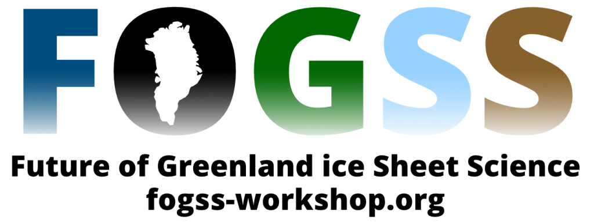

The University of Idaho will host the 2024 Future of Greenland ice Sheet Science (FOGSS) workshop April 3-5. The workshop will take place on the UI campus, in Moscow, and also be accessible remotely for those unable to travel.
FOGSS is a joint NSF/NASA-sponsored workshop whereby the community of researchers studying the Greenland Ice Sheet engages in discussion to set research priorities and collaboratively advance our science. You can learn more about FOGSS and the coming workshop here: https://www.fogss-workshop.org/2024-workshop
